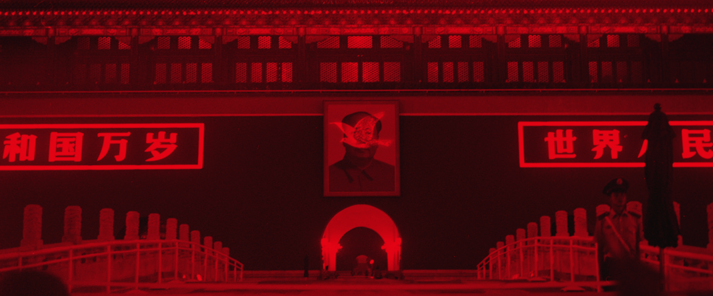
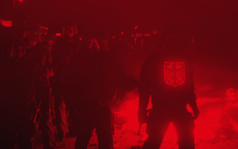
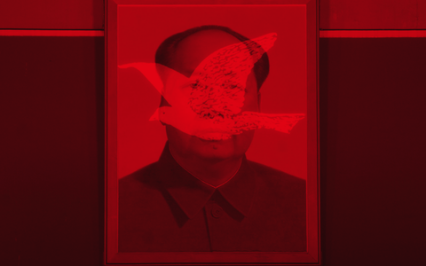
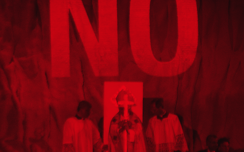
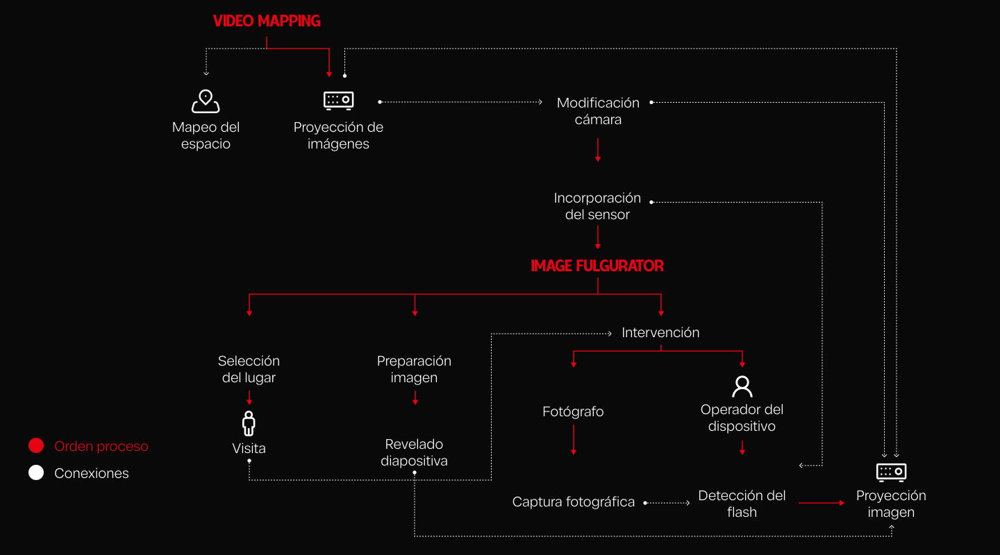

Grupo 01: Rosario Álvarez, Javiera Córdova, Noemí Cruz, María Matta, Amélie Meynard y Pedro Rozas
Image Fulgurator

Image Fulgurator es un proyecto que se relaciona con el Video Mapping, una técnica de proyección visual que permite desplegar imágenes sobre superficies reales, adaptándolas a su geometría y relieve. A través de este proceso, los objetos y espacios físicos se transforman en soportes visuales, alterando temporalmente su apariencia y la percepción del espectador mediante ilusiones ópticas (Arquinetpolis, s. f.).
01
Video Mapping como herramienta de resignificación
Al funcionar como un puente entre lo físico y lo digital, el Video Mapping permite intervenir espacios y resignificar su contenido simbólico. Mediante proyecciones lumínicas efímeras, esta técnica puede cuestionar las narrativas oficiales y visibilizar tensiones sociales, aprovechando el significado cultural e histórico de los espacios y monumentos intervenidos (Arquinetpolis, s. f.).
02
Video Mapping como herramienta de activismo
Aunque el Video Mapping tiene una estrecha relación con el espectáculo visual, también ha sido utilizado como medio de expresión crítica. Un ejemplo es Projecting Change (2015), una intervención vinculada al documental Racing Extinction, que proyectó imágenes de especies en peligro de extinción sobre el Empire State Building para concientizar sobre su conservación (CBS News, 2015).
En contraste con estas intervenciones monumentales y autorizadas, el critical media puede apropiarse de las técnicas de proyección mediante el mapping de guerrilla. Esta práctica utiliza equipos portátiles e intervenciones no autorizadas para transformar el espectáculo visual en una herramienta táctica y subversiva de activismo.
Qué es Image Fulgurator
Image Fulgurator es un proyecto de arte y diseño crítico creado en 2007 por el artista . Consiste en un dispositivo que aparenta ser una cámara fotográfica convencional, pero que funciona de manera inversa: en lugar de capturar imágenes, proyecta mensajes o símbolos que aparecen en las fotografías tomadas por otras personas, sin que estas perciban la intervención (von Bismarck, s. f.).
Julius von Bismarck
Es un artista alemán, nacido en 1983 en la ciudad de Breisach am Rhein. Estudió en la Universidad de las Artes de Berlín (entre 2005 y 2013) y en Hunter College de Nueva York (2007).
Ha recibido premios como el Shifting Foundation en Beverly Hills (2018), el IBB Photography Award, IBB Atrium en Berlín (2013) y el Prix Ars Electronica Award en Linz (2009), entre otros.



Cómo funciona
El dispositivo utiliza un sensor que detecta el flash de otra cámara y activa una proyección durante unos pocos milisegundos. Esta queda registrada en la fotografía, aunque resulta prácticamente imperceptible para el ojo humano debido a su corta duración. De esta manera, las personas descubren elementos inesperados al revisar sus fotografías, generando una contradicción entre lo que observaron y lo que quedó registrado (von Bismarck, s. f.; Universität der Künste Berlin, s. f.).


Cuál es su objetivo
El proyecto busca cuestionar la confianza que depositamos en las fotografías como representaciones fieles y objetivas de la realidad. A través de intervenciones inesperadas, demuestra que las imágenes pueden ser manipuladas incluso durante el momento de su captura. Así, invita a reflexionar sobre cómo la tecnología y los medios visuales influyen en nuestra percepción y construcción de la realidad (Universität der Künste Berlin, s. f.).
Qué problemáticas aborda
Estas problemáticas se relacionan con la intención del artista de intervenir la memoria visual y cuestionar la credibilidad que atribuimos a los registros fotográficos (Universität der Künste Berlin, s. f.).
Reflexión: Image Fulgurator y Video Mapping
Aunque Image Fulgurator no corresponde técnicamente al Video Mapping, ambas prácticas utilizan la proyección sobre superficies reales para intervenir y resignificar espacios. La diferencia radica en que el Video Mapping transforma la percepción visual del entorno, mientras que Image Fulgurator modifica su registro fotográfico, cuestionando la objetividad de las imágenes y nuestra interpretación de la realidad (von Bismarck, s. f.; Universität der Künste Berlin, s. f.).
Principios de los nuevos medios de Lev Manovich
01
Representación numérica
La imagen obtenida es un objeto de los nuevos medios, lo que significa que se puede representar numéricamente.
02
Modularidad
La imagen digital obtenida está compuesta de pixeles, que son muestras discretas independientes.
03
Automatización
Si bien lo más típico es pensar en automatizaciones puramente digitales, este proyecto utiliza este principio a través de un sensor que detecta el flash y automatiza el proceso de intervención fotográfica.
04
Variabilidad
La base del proyecto es manipular las fotografías de otras personas en el momento que están siendo tomadas. Esto genera que la imagen obtenida sea diferente a la que la persona cree que fotografió.
05
Transcodificación
Al funcionar como un puente entre lo físico y lo digital, existe una transcodificación de la información entre ambos planos.
Referencias
Arquinetpolis. (s. f.). ¿Qué es el video mapping? Cómo funciona y ejemplos. https://arquinetpolis.com/software-para-arquitectos/que-es-el-video-mapping/
CBS News. (2015, 2 de agosto). Endangered animals take over the Empire State Building [Galería fotográfica]. https://www.cbsnews.com/pictures/a-true-urban-jungle-endangered-animals-take-over-empire-state-building/
Esther Schipper. (s. f.). Julius von Bismarck: Biography. https://www.estherschipper.com/artists/162-julius-von-bismarck/biography/
Universität der Künste Berlin. (s. f.). Julius von Bismarck — Image Fulgurator. New Media Class. https://newmedia.udk-berlin.de/students/julius-von-bismarck/image-fulgurator
Von Bismarck, J. (s. f.). Image Fulgurator. https://juliusvonbismarck.com/bank/index.php/projects/image-fulgurator/2/